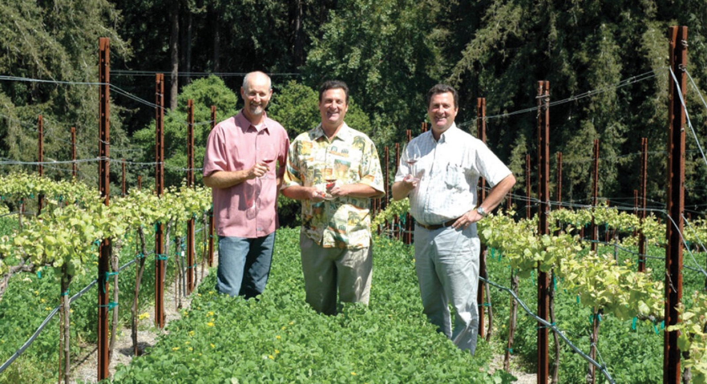
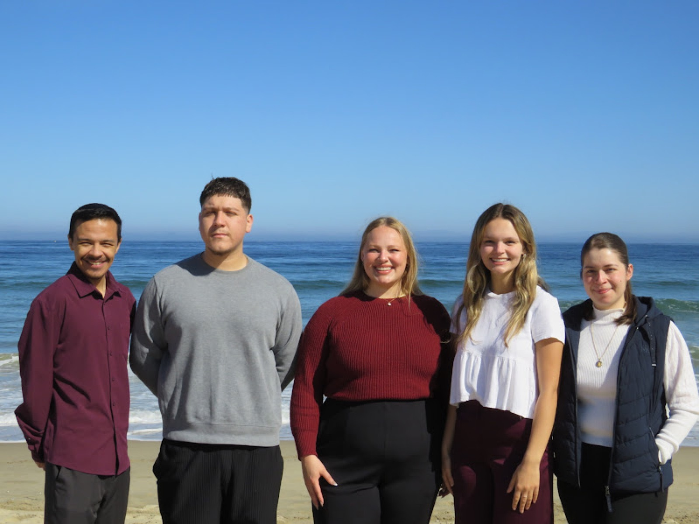
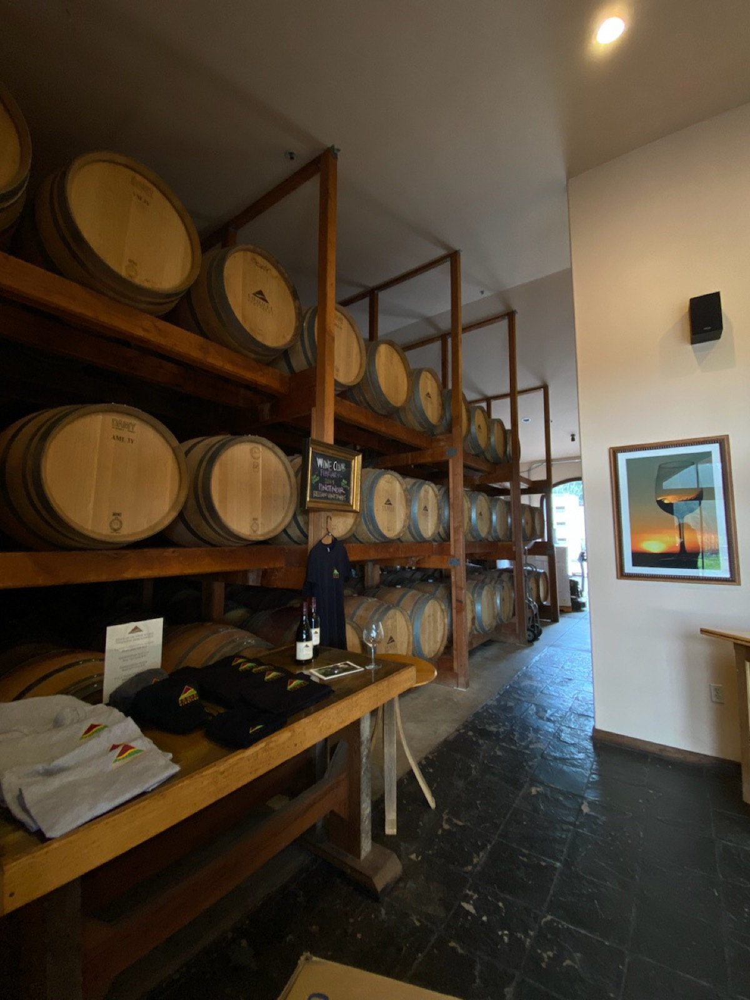
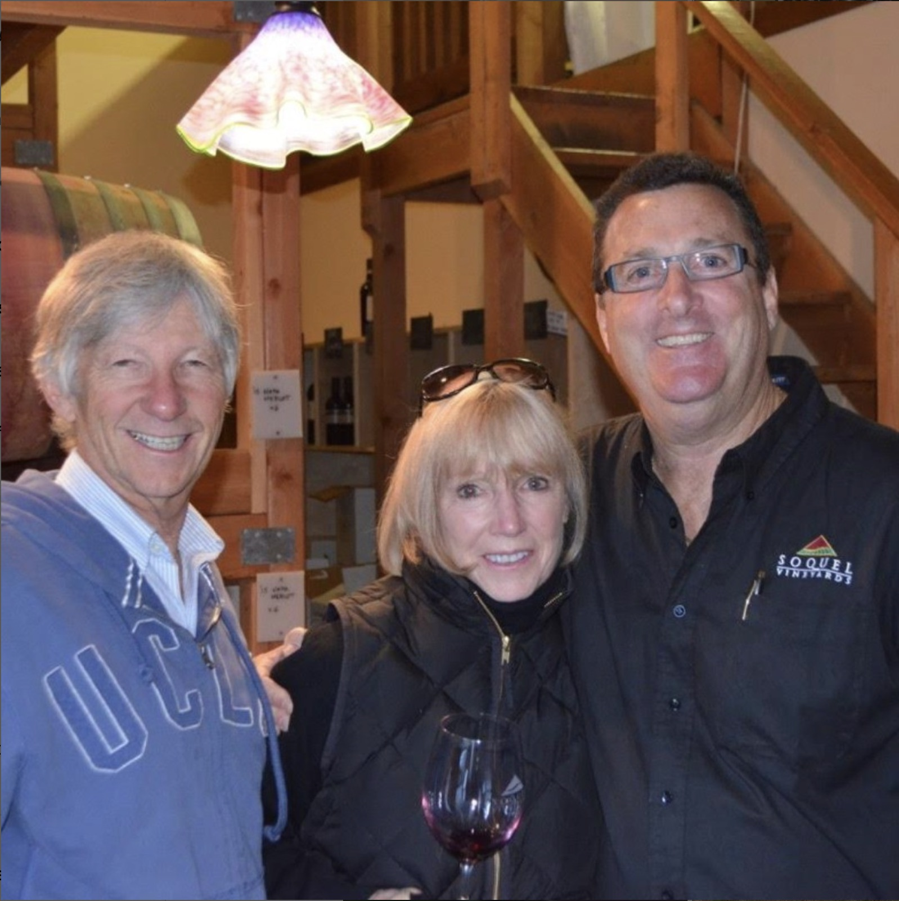
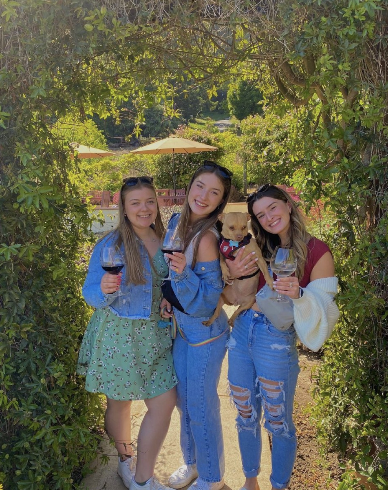
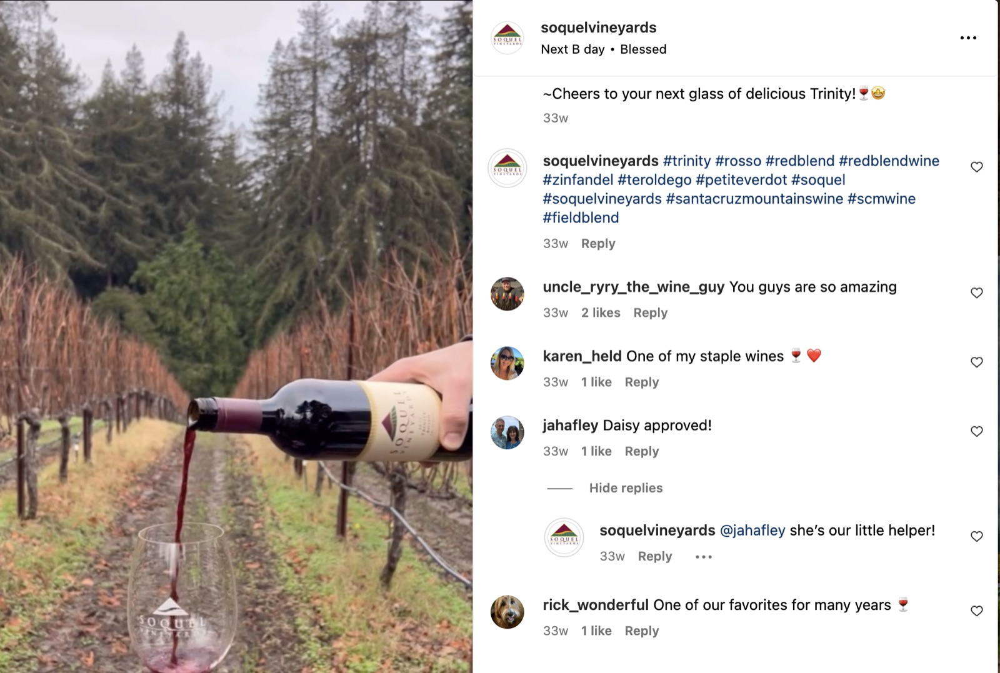
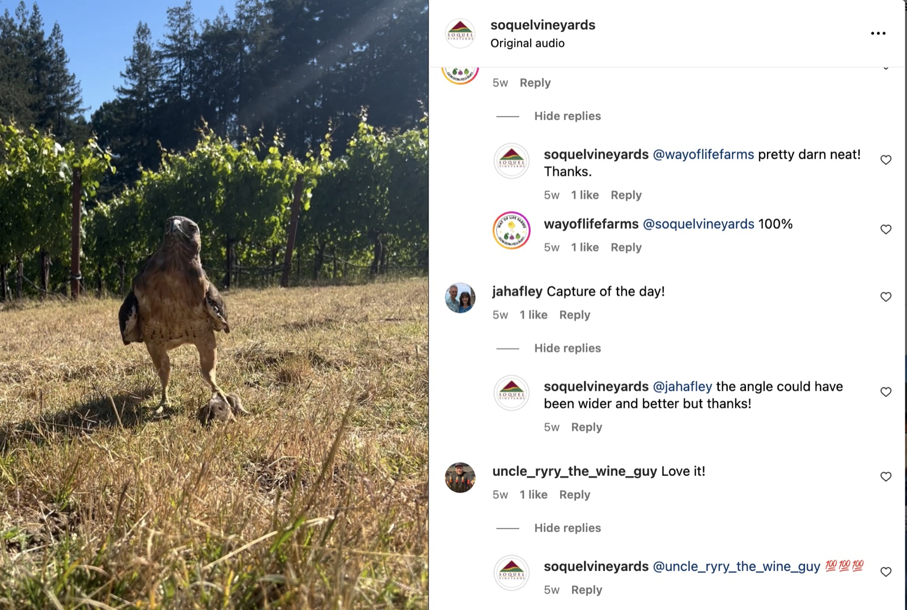

Case Study 04
Soquel Vineyards
Developed a strategic plan that included industry and competitive analysis, internal and external assessments, and a targeted marketing and social media strategy as part of my senior capstone project at California State University, Monterey Bay.

Project summary
Bringing a boutique winery to a new generation
My team and I spent several months collaborating with Soquel Vineyards, a boutique winery nestled in the Santa Cruz Mountains, to identify optimal strategies for enhancing their business operations. Through comprehensive internal, external, industry, and competitive analyses, we determined the most effective solutions tailored to the unique needs of Soquel Vineyards.
Project goals
Identify areas of growth through analysis
Create a marketing plan with an emphasis on social media
Make Soquel Vineyards more accessible to the public
About the client
About Soquel Vineyards
Soquel Vineyards is a family-owned winery in the Santa Cruz Mountains, founded by Peter and Paul Bargetto and Jon Morgan in 1987. As third-generation winemakers, these three friends transformed their beloved hobby into a profound passion, with a mission to break stereotypes and make wine more accessible and less pretentious without sacrificing quality.
Soquel Vineyards has specialized their craft using locally grown mountain grapes. Today they have over 90 awards in wine competitions.

Tools
- Canva
- Google Slides
- Google Calendar
- Zoom
- In-person interviews
- EBSCOhost research
My role
Team Lead
- Organizing team contract
- Organizing meetings with team and clients
- Team management and coordination
- Support for team members
- Problem-solving and solution organization
- Motivation and morale

The process
The team adopted a waterfall approach for this project, progressing through each phase systematically. We began with a thorough client background study, followed by an industry and competitive analysis, and then conducted external and internal assessments. After identifying the key problem, we developed a targeted solution to address it effectively.

The challenges
Soquel Vineyards is recognized as a well-established and highly regarded winery in Santa Cruz County and its neighboring regions. However, their reputation primarily resonates with their existing client base, which predominantly consists of individuals aged 35 and older, and they rely primarily on word-of-mouth marketing.
The winery faces challenges in reaching younger audiences due to three key factors: a decline in alcohol consumption among younger generations, the intimidating pretentiousness of the wine industry in general, and the underutilization of modern marketing strategies that effectively target this demographic.

The solutions
-
Social media marketing plan
- Use more social media sites
- Be more active and interact with customers more
- Partner with local social media accounts, wine influencers, and California travel influencers
- Do fun, casual, and informational posts to remove the stigma around wine culture
-
Host more events for the general public to bring more foot traffic to the tasting room
- Host events targeted toward younger generations (e.g., a Paint and Sip event, Trivia Hour)
-
Implement a bus system from town up to the tasting room
- Removes pain points for people who worry about driving on mountain roads
- Marketing the story of Soquel Vineyards starts as soon as customers are on the bus
- Allows customers to feel more connected to Soquel Vineyards

Predicted outcomes & early implementation
By implementing these suggestions, Soquel Vineyards could not only expand its existing client base but also attract a younger demographic. Leveraging social media marketing would enable the winery to promote trendy events specifically tailored to younger audiences. Additionally, offering a more personalized experience through transportation services and curated events at the tasting room would help foster brand loyalty across a diverse customer base.


Reflection
I am incredibly grateful that my team and I had the opportunity to work with Soquel Vineyards.
Throughout the project, we conducted extensive research and interviews to identify areas where Soquel Vineyards could improve to reach a broader audience. We explored numerous ideas and potential solutions, ultimately focusing on those that could be implemented quickly.
As our project concluded just as the winery’s busy season began, Soquel Vineyards was able to consider our recommendations and start implementing some immediately, with plans to integrate others once the peak season subsided. Had we had more time, we would have developed a more comprehensive social media marketing plan and established a system for content creation that they could use right away.
Since the project’s completion, Soquel Vineyards has begun taking steps to implement our recommendations. They are enhancing their social media presence and becoming more active on these platforms. Recently, they hosted a successful wine and olive oil tasting event in collaboration with a local farm.